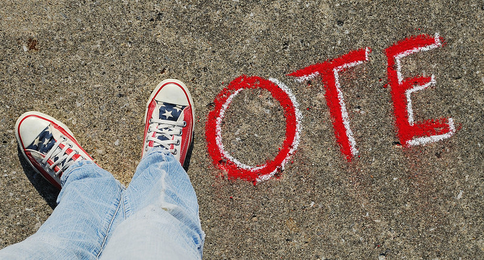
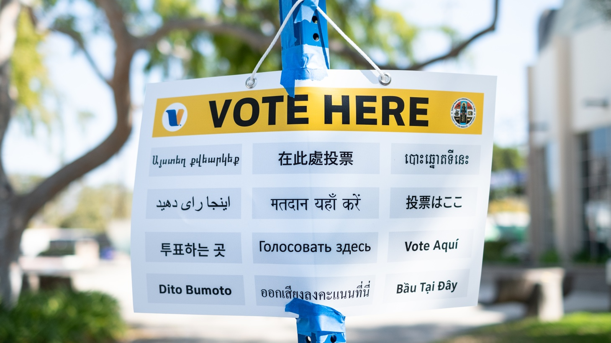
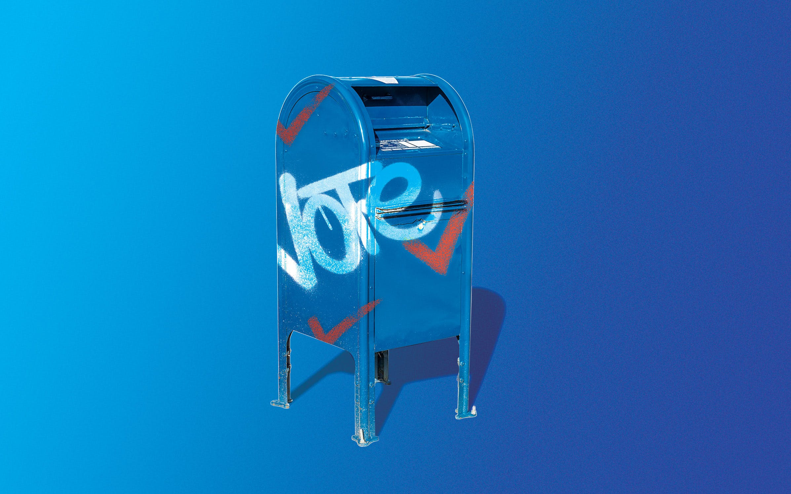
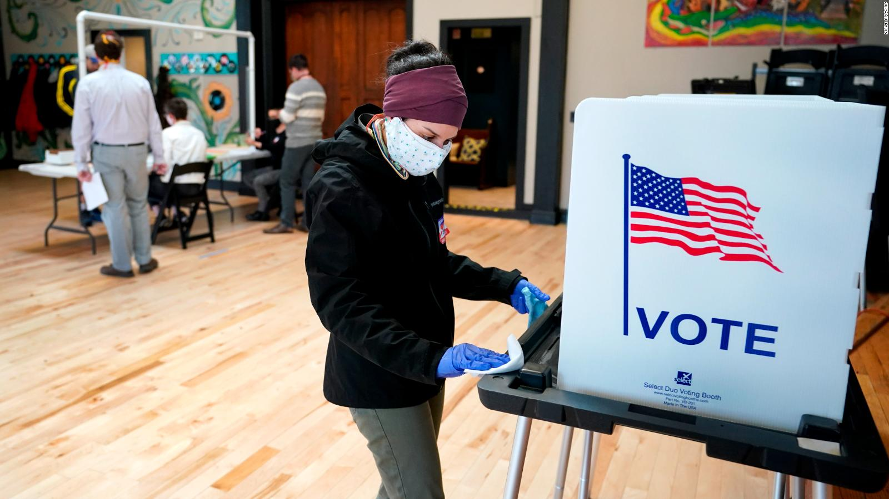

Election Day
The date of the 2020 US Election is set by federal law for all Americans. This year Election Day is Tuesday, November 3, 2020. This is also known as the general election.The general election determines which candidate from among the political parties wins. Political party preference has no effect on when you vote during a general election.

States Have Different Rules & Timelines
Voting rules are different in each state. That means that you need to check what options you have for November. There could be early voting, voting by mail, and in-person voting on Election Day. The best source of information for how voting works in your state is your state’s election authority.

Turn in Your Ballot Early
Make sure you understand when mail ballots must be postmarked and/or received by an election official in your state to be valid for counting. Then make sure there is enough time to request, receive, and return the mail ballot, whether you do it by mail or at a drop-off location.

Voter Fraud is Extremely Rare
Each voter’s identity and eligibility to vote are verified before their ballot is counted. Oregon, the first state to adopt a vote by mail system, has averaged fewer than one case of fraud per year for two decades. Claims of voter fraud are investigated by authorities and can result in criminal charges.

Consider Voting Your Ballot At Home
Every voter will receive a ballot through the mail. By voting at home, you will avoid crowd (and COVID-19 safety precautions). Return your ballot via secure drop box, by mail(no postage required), or at one of the Vote Centers.
